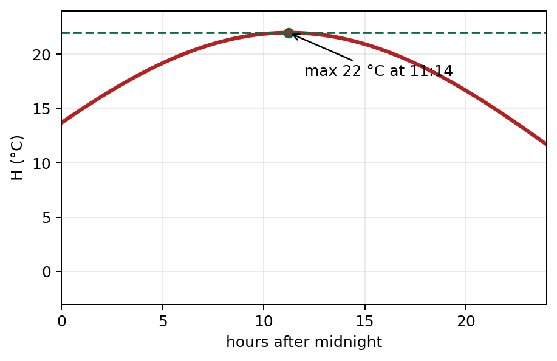

Strategy
Replace \(\tan x\), clear the denominator and solve the quadratic in \(\cos x\).
In this question you must show all stages of your working. Solutions relying entirely on calculator technology are not acceptable. Use the equation of the model to answer parts (a) to (c).
(i) Solve, for \(0<x\le\pi\), \(5\sin x\tan x+13=\cos x\), giving your answer in radians to 3 significant figures. (5)
(ii) \(H=10+12\sin(kt+18)^\circ,\ 0\le t<24\), where \(H\) is temperature in °C and \(t\) is hours after midnight. Given \(H=20\) at 6 am and \(0<k<20\): (a) find all possible \(k\), 2 d.p. (4). Given further \(0<k<10\): (b) find the maximum temperature (1); (c) find the time of day of this maximum, nearest minute (2).

Replace \(\tan x\), clear the denominator and solve the quadratic in \(\cos x\).
Formula. \(\tan x=\sin x/\cos x\), \(\sin^2x=1-\cos^2x\).
\[5\sin^2x+13\cos x=\cos^2x\Rightarrow6\cos^2x-13\cos x-5=0.\]\[(3\cos x+1)(2\cos x-5)=0\Rightarrow\cos x=-\frac13.\]\[x=\arccos(-1/3)=1.91\text{ rad (3 s.f.)}.\]Sense check. \(\cos x=-1/3\) lies in quadrant II of \((0,\pi]\).
Set \(H=20\), solve the two degree-angle sine solutions, then isolate \(k\).
Sense check. The degree symbol means the calculator must be in degree mode for this part.
Use the maximum value of sine.
Maximum. \(\sin\theta\le1\).
\[H_{\max}=10+12(1)=22\,^\circ\mathrm C.\]Sense check. It is a temperature, so include the unit °C.
Solve for the elapsed time and convert the decimal hour to minutes.
Final format. \(11{:}14\).
Sense check. The question asks for time of day, not decimal hours.
Use the visible prompt as a contract: the answer must address every command word, stated restriction and requested presentation instruction before the final line is written. In particular, keep earlier-part results visible as carry-ins so later parts can be attempted independently.